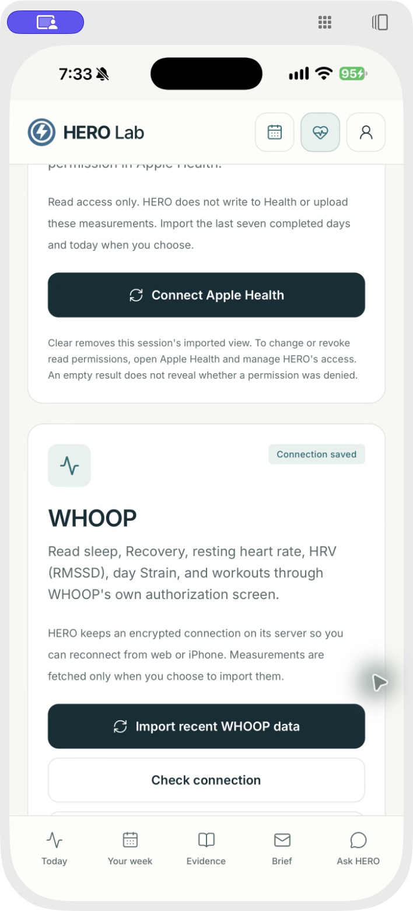
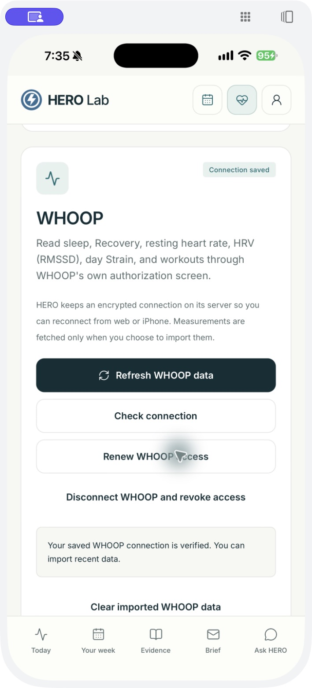

Developer review preview
Optional WHOOP connection.
HERO Lab helps people plan their week and review recovery information. This preview shows the optional WHOOP connection in iOS version 1.0.0, build 8.
This is a review preview, not an announcement of WHOOP approval or general availability. The WHOOP sandbox is limited to 10 members. We are requesting Build access for up to 100 members. App release remains manual.
Your consent
A signed-in user chooses Connect WHOOP and authorizes access through WHOOP's OAuth screen. HERO requests read access to cycles, recovery, sleep and workouts, plus offline access to refresh the connection. It does not request profile or body scopes.
Your data
Connection credentials are encrypted on HERO's server. Only tapping Import fetches seven days of summaries, held in client memory for the session. Measurements are not stored in HERO's database, sent to AI services or used for newsletters.
Connection screens
These build 8 screenshots show connection controls and the return to HERO after authorization. They contain no health measurements or account details.


Read the privacy notice for retention and deletion details, or visit support for help.